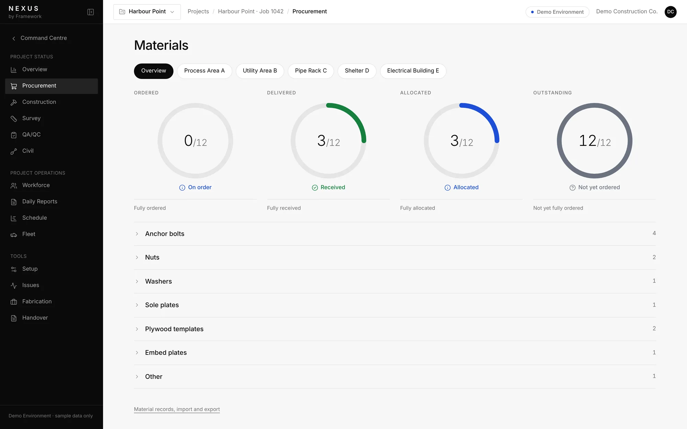
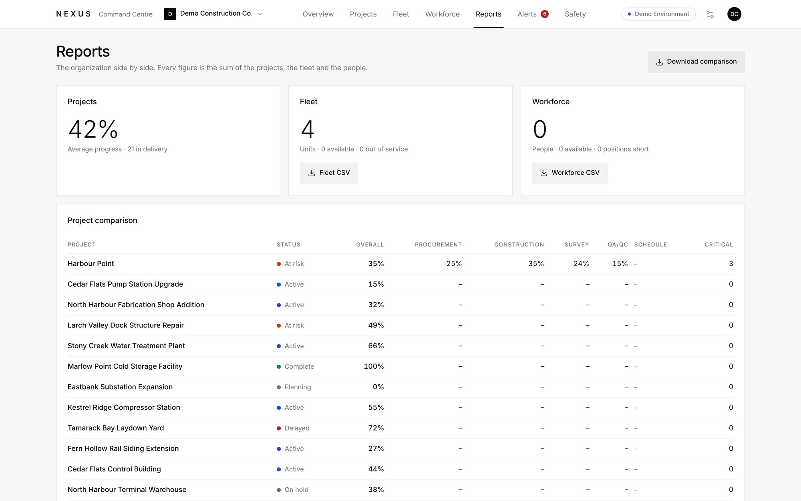
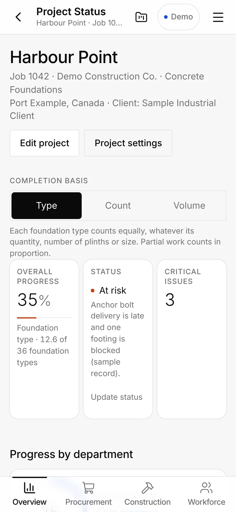
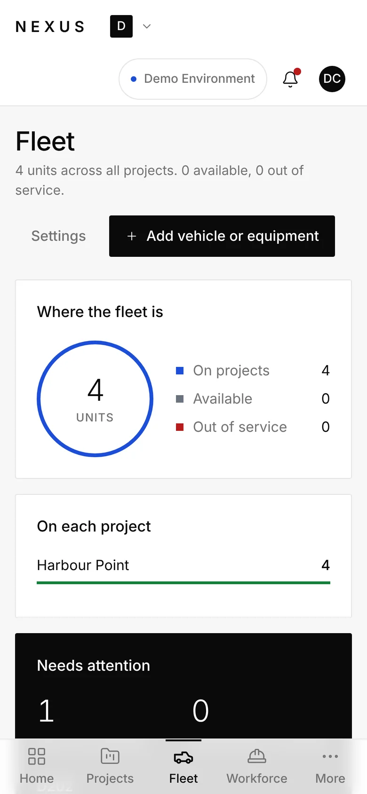

Managing projects is difficult.Tracking them shouldn't be.
Know where every project actually stands. Nexus is Framework's construction project management platform, built by us and still under development.

The schedule is in one file. Deliveries are in a spreadsheet. Progress is in a text thread.
Information is scattered
Schedule, procurement, field progress, inspections, crews and equipment each live in a different tool.
Status becomes a guess
A delivery is marked delivered because someone said so. A foundation is called finished because it looks finished.
Problems surface late
When the picture only comes together at month end, the first sign of trouble can be the cost of it.
From the company down to the foundation.
Nexus is organized the way construction is organized. Each level shows only what belongs to it, and the detail is one click deeper.
- 01CompanyEvery project and what needs attention.
- 02ProjectOverall progress, recorded status and issues.
- 03AreaConstruction, procurement, survey and QA/QC progress.
- 04FoundationFootings, plinths, materials and inspections.

Recorded. Not assumed.
Most project software shows green until someone checks. Nexus shows what has been recorded, and says so when it has not.
What is built, and what is still coming.
Nexus is under development as a whole. This list separates what is built from what is not.
Implemented features
- Command Centre and alertsEvery project's status and what needs attention, critical items first, each linked to where it is fixed.
- Progress by footing and plinthRebar, forming and pouring recorded for each footing and plinth, with survey and QA/QC shown separately.
- ProcurementPurchase orders and partial deliveries. Material allocated can never exceed what has been received.
- FleetOdometer readings held for review, service, tires and weekly inspections, in an organization view and a project view.
- ReportsProject comparison and fleet and workforce tables, with CSV export.
- Phone layoutA bottom-navigation layout with cards and sheets for use on site.
Preview
- Schedule and Microsoft Project importPreview import of MS Project files, with revisions kept.
- WorkforceDirectory, crews and certifications.
- Daily reportsRecords of each day on site.
Planned
- Mobile inspections
- Plan import and drawing analysisInteractive demonstrations are in development.
- Earthworks and other civil work
Implemented means the feature is built and working in the current version of the product. It does not mean the feature, or Nexus itself, is publicly available. Preview means working but not yet fully verified. Planned means being developed.
Real screens from the current product.







All screens show demonstration data: a fictional organization and fictional projects.
Built for the people running construction projects.
- General contractors and construction managers
- Civil and industrial contractors
- Project managers and coordinators
- Field supervisors
Today Nexus tracks industrial concrete foundations and anchorage in the greatest depth. Earthworks and other civil work are planned.
What people ask about Nexus.
Is Nexus available now?
Nexus is under development. Some features are implemented, some are in preview and some are planned, and the list above shows which. We are not announcing public availability yet.
Who builds Nexus?
Nexus is built by Framework, a Calgary digital solutions company. It is our own product, not a reseller's.
How does Nexus handle project data?
Nexus is still under development, so we are not publishing details about data handling, hosting or security yet. Ask us and we will tell you where it stands.
How much does it cost?
Pricing has not been set.
Interested in Nexus?
Tell us about your projects and we'll tell you where Nexus is today. Mention Nexus in your message.